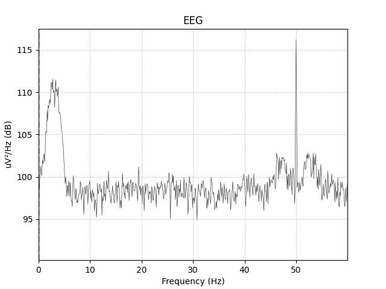

Interface with MNE-python¶
This example shows how to use this package with MNE-python.
It relies on the function raw_to_mask, which takes as input a MNE.Raw
instance and an events array, and returns the corresponding input signals
and masks for the Comodulogram.fit method.
Note that this example is quite bad since it does not contain any phase-amplitude coupling. It is just an API example.
Out:
[ ] 0% | 0.00 sec | comodulogram: tort
[ ] 1% | 0.80 sec | comodulogram: tort
[ ] 2% | 0.92 sec | comodulogram: tort
[. ] 2% | 1.03 sec | comodulogram: tort
[. ] 3% | 1.15 sec | comodulogram: tort
[. ] 4% | 1.27 sec | comodulogram: tort
[.. ] 5% | 1.40 sec | comodulogram: tort
[.. ] 6% | 1.52 sec | comodulogram: tort
[.. ] 7% | 1.65 sec | comodulogram: tort
[... ] 8% | 1.77 sec | comodulogram: tort
[... ] 8% | 1.90 sec | comodulogram: tort
[... ] 9% | 2.03 sec | comodulogram: tort
[.... ] 10% | 2.16 sec | comodulogram: tort
[.... ] 11% | 2.29 sec | comodulogram: tort
[.... ] 12% | 2.42 sec | comodulogram: tort
[..... ] 12% | 2.55 sec | comodulogram: tort
[..... ] 13% | 2.68 sec | comodulogram: tort
[..... ] 14% | 2.81 sec | comodulogram: tort
[...... ] 15% | 2.94 sec | comodulogram: tort
[...... ] 16% | 3.08 sec | comodulogram: tort
[...... ] 17% | 3.21 sec | comodulogram: tort
[....... ] 18% | 3.40 sec | comodulogram: tort
[....... ] 18% | 3.51 sec | comodulogram: tort
[....... ] 19% | 3.62 sec | comodulogram: tort
[........ ] 20% | 3.73 sec | comodulogram: tort
[........ ] 21% | 3.84 sec | comodulogram: tort
[........ ] 22% | 3.96 sec | comodulogram: tort
[......... ] 22% | 4.08 sec | comodulogram: tort
[......... ] 23% | 4.20 sec | comodulogram: tort
[......... ] 24% | 4.32 sec | comodulogram: tort
[.......... ] 25% | 4.45 sec | comodulogram: tort
[.......... ] 26% | 4.58 sec | comodulogram: tort
[.......... ] 27% | 4.70 sec | comodulogram: tort
[........... ] 28% | 4.83 sec | comodulogram: tort
[........... ] 28% | 4.96 sec | comodulogram: tort
[........... ] 29% | 5.09 sec | comodulogram: tort
[............ ] 30% | 5.22 sec | comodulogram: tort
[............ ] 31% | 5.35 sec | comodulogram: tort
[............ ] 32% | 5.49 sec | comodulogram: tort
[............. ] 32% | 5.62 sec | comodulogram: tort
[............. ] 33% | 5.76 sec | comodulogram: tort
[............. ] 34% | 5.95 sec | comodulogram: tort
[.............. ] 35% | 6.05 sec | comodulogram: tort
[.............. ] 36% | 6.16 sec | comodulogram: tort
[.............. ] 37% | 6.27 sec | comodulogram: tort
[............... ] 38% | 6.39 sec | comodulogram: tort
[............... ] 38% | 6.50 sec | comodulogram: tort
[............... ] 39% | 6.62 sec | comodulogram: tort
[................ ] 40% | 6.75 sec | comodulogram: tort
[................ ] 41% | 6.88 sec | comodulogram: tort
[................ ] 42% | 7.01 sec | comodulogram: tort
[................. ] 42% | 7.14 sec | comodulogram: tort
[................. ] 43% | 7.28 sec | comodulogram: tort
[................. ] 44% | 7.42 sec | comodulogram: tort
[.................. ] 45% | 7.56 sec | comodulogram: tort
[.................. ] 46% | 7.70 sec | comodulogram: tort
[.................. ] 47% | 7.84 sec | comodulogram: tort
[................... ] 48% | 7.98 sec | comodulogram: tort
[................... ] 48% | 8.11 sec | comodulogram: tort
[................... ] 49% | 8.25 sec | comodulogram: tort
[.................... ] 50% | 8.39 sec | comodulogram: tort
[.................... ] 51% | 8.58 sec | comodulogram: tort
[.................... ] 52% | 8.69 sec | comodulogram: tort
[..................... ] 52% | 8.80 sec | comodulogram: tort
[..................... ] 53% | 8.91 sec | comodulogram: tort
[..................... ] 54% | 9.03 sec | comodulogram: tort
[...................... ] 55% | 9.14 sec | comodulogram: tort
[...................... ] 56% | 9.26 sec | comodulogram: tort
[...................... ] 57% | 9.39 sec | comodulogram: tort
[....................... ] 57% | 9.52 sec | comodulogram: tort
[....................... ] 58% | 9.65 sec | comodulogram: tort
[....................... ] 59% | 9.77 sec | comodulogram: tort
[........................ ] 60% | 9.91 sec | comodulogram: tort
[........................ ] 61% | 10.04 sec | comodulogram: tort
[........................ ] 62% | 10.17 sec | comodulogram: tort
[......................... ] 62% | 10.31 sec | comodulogram: tort
[......................... ] 63% | 10.44 sec | comodulogram: tort
[......................... ] 64% | 10.57 sec | comodulogram: tort
[.......................... ] 65% | 10.70 sec | comodulogram: tort
[.......................... ] 66% | 10.85 sec | comodulogram: tort
[.......................... ] 67% | 11.01 sec | comodulogram: tort
[........................... ] 68% | 11.20 sec | comodulogram: tort
[........................... ] 68% | 11.32 sec | comodulogram: tort
[........................... ] 69% | 11.44 sec | comodulogram: tort
[............................ ] 70% | 11.56 sec | comodulogram: tort
[............................ ] 71% | 11.67 sec | comodulogram: tort
[............................ ] 72% | 11.78 sec | comodulogram: tort
[............................. ] 72% | 11.90 sec | comodulogram: tort
[............................. ] 73% | 12.01 sec | comodulogram: tort
[............................. ] 74% | 12.13 sec | comodulogram: tort
[.............................. ] 75% | 12.25 sec | comodulogram: tort
[.............................. ] 76% | 12.37 sec | comodulogram: tort
[.............................. ] 77% | 12.50 sec | comodulogram: tort
[............................... ] 78% | 12.62 sec | comodulogram: tort
[............................... ] 78% | 12.75 sec | comodulogram: tort
[............................... ] 79% | 12.87 sec | comodulogram: tort
[................................ ] 80% | 13.00 sec | comodulogram: tort
[................................ ] 81% | 13.12 sec | comodulogram: tort
[................................ ] 82% | 13.25 sec | comodulogram: tort
[................................. ] 82% | 13.38 sec | comodulogram: tort
[................................. ] 83% | 13.50 sec | comodulogram: tort
[................................. ] 84% | 13.67 sec | comodulogram: tort
[.................................. ] 85% | 13.78 sec | comodulogram: tort
[.................................. ] 86% | 13.88 sec | comodulogram: tort
[.................................. ] 87% | 13.99 sec | comodulogram: tort
[................................... ] 88% | 14.10 sec | comodulogram: tort
[................................... ] 88% | 14.21 sec | comodulogram: tort
[................................... ] 89% | 14.33 sec | comodulogram: tort
[.................................... ] 90% | 14.44 sec | comodulogram: tort
[.................................... ] 91% | 14.56 sec | comodulogram: tort
[.................................... ] 92% | 14.70 sec | comodulogram: tort
[..................................... ] 92% | 14.82 sec | comodulogram: tort
[..................................... ] 93% | 14.95 sec | comodulogram: tort
[..................................... ] 94% | 15.08 sec | comodulogram: tort
[...................................... ] 95% | 15.22 sec | comodulogram: tort
[...................................... ] 96% | 15.35 sec | comodulogram: tort
[...................................... ] 97% | 15.47 sec | comodulogram: tort
[....................................... ] 98% | 15.60 sec | comodulogram: tort
[....................................... ] 98% | 15.73 sec | comodulogram: tort
[....................................... ] 99% | 15.86 sec | comodulogram: tort
[........................................] 100% | 15.98 sec | comodulogram: tort
import mne
import numpy as np
import matplotlib.pyplot as plt
from pactools import raw_to_mask, Comodulogram
# load the dataset
data_path = mne.datasets.sample.data_path()
raw_fname = data_path + '/MEG/sample/sample_audvis_filt-0-40_raw.fif'
event_fname = data_path + ('/MEG/sample/sample_audvis_filt-0-40_raw-'
'eve.fif')
raw = mne.io.read_raw_fif(raw_fname, preload=True)
events = mne.read_events(event_fname)
# select the time interval around the events
tmin, tmax = -5, 15
# select the channels (phase_channel, amplitude_channel)
ixs = (8, 10)
# create the input array for Comodulogram.fit
low_sig, high_sig, mask = raw_to_mask(raw, ixs=ixs, events=events, tmin=tmin,
tmax=tmax)
# create the instance of Comodulogram
estimator = Comodulogram(fs=raw.info['sfreq'],
low_fq_range=np.linspace(1, 10, 20), low_fq_width=2.,
method='tort', progress_bar=True)
# compute the comodulogram
estimator.fit(low_sig, high_sig, mask)
# plot the results
estimator.plot(tight_layout=False)
plt.show()
Total running time of the script: ( 0 minutes 16.878 seconds)